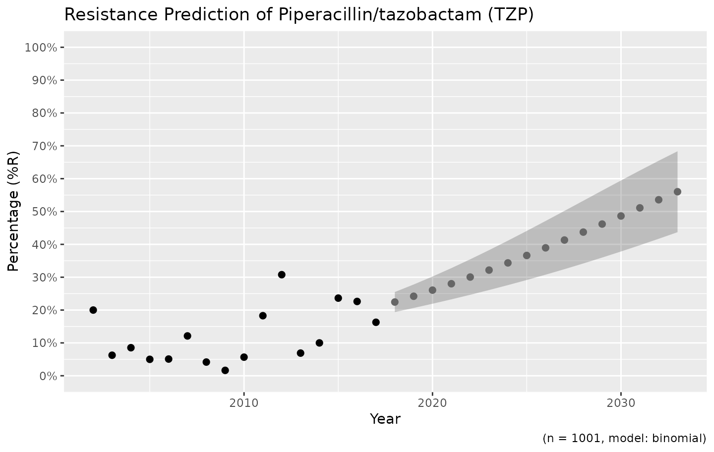
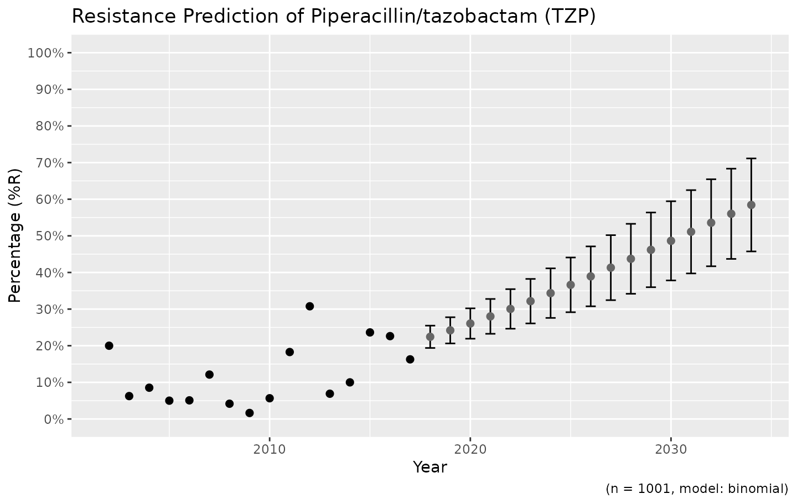
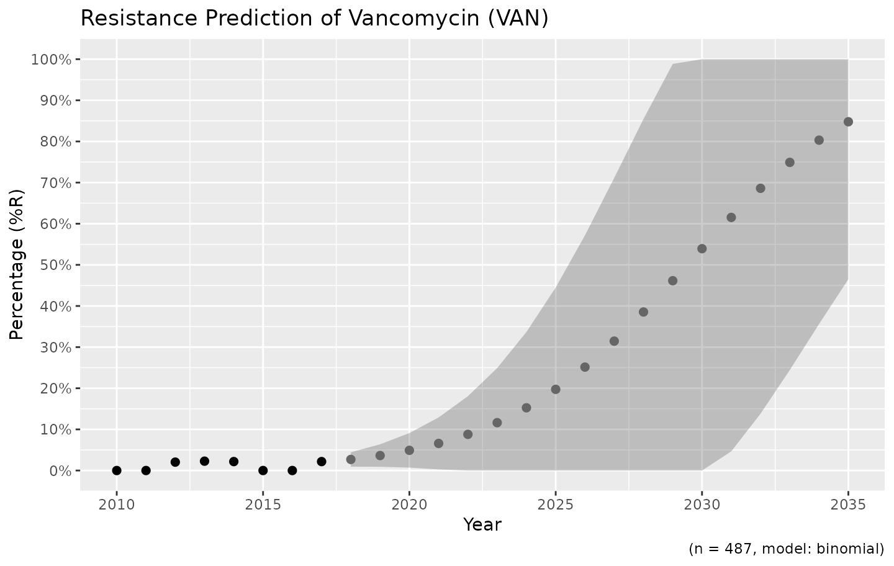
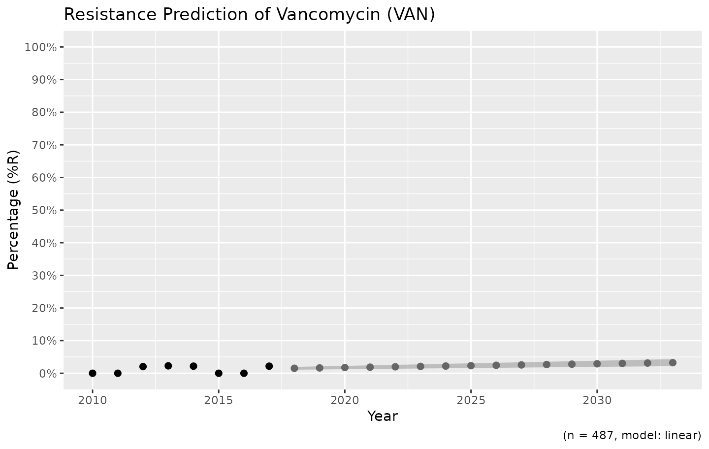

How to predict antimicrobial resistance
Source:vignettes/resistance_predict.Rmd
resistance_predict.RmdNeeded R packages
As with many uses in R, we need some additional packages for AMR data
analysis. Our package works closely together with the tidyverse packages dplyr and ggplot2. The
tidyverse tremendously improves the way we conduct data science - it
allows for a very natural way of writing syntaxes and creating beautiful
plots in R.
Our AMR package depends on these packages and even
extends their use and functions.
Prediction analysis
Our package contains a function resistance_predict(),
which takes the same input as functions for other
AMR data analysis. Based on a date column, it calculates cases per
year and uses a regression model to predict antimicrobial
resistance.
It is basically as easy as:
# resistance prediction of piperacillin/tazobactam (TZP):
resistance_predict(tbl = example_isolates, col_date = "date", col_ab = "TZP", model = "binomial")
# or:
example_isolates %>%
resistance_predict(
col_ab = "TZP",
model = "binomial"
)
# to bind it to object 'predict_TZP' for example:
predict_TZP <- example_isolates %>%
resistance_predict(
col_ab = "TZP",
model = "binomial"
)The function will look for a date column itself if
col_date is not set.
When running any of these commands, a summary of the regression model
will be printed unless using
resistance_predict(..., info = FALSE).
This text is only a printed summary - the actual result (output) of
the function is a data.frame containing for each year: the
number of observations, the actual observed resistance, the estimated
resistance and the standard error below and above the estimation:
predict_TZP
#> # A tibble: 34 × 7
#> year value se_min se_max observations observed estimated
#> * <dbl> <dbl> <dbl> <dbl> <int> <dbl> <dbl>
#> 1 2002 0.2 NA NA 15 0.2 0.0562
#> 2 2003 0.0625 NA NA 32 0.0625 0.0616
#> 3 2004 0.0854 NA NA 82 0.0854 0.0676
#> 4 2005 0.05 NA NA 60 0.05 0.0741
#> 5 2006 0.0508 NA NA 59 0.0508 0.0812
#> 6 2007 0.121 NA NA 66 0.121 0.0889
#> 7 2008 0.0417 NA NA 72 0.0417 0.0972
#> 8 2009 0.0164 NA NA 61 0.0164 0.106
#> 9 2010 0.0566 NA NA 53 0.0566 0.116
#> 10 2011 0.183 NA NA 93 0.183 0.127
#> # ℹ 24 more rowsThe function plot is available in base R, and can be
extended by other packages to depend the output based on the type of
input. We extended its function to cope with resistance predictions:
plot(predict_TZP)This is the fastest way to plot the result. It automatically adds the right axes, error bars, titles, number of available observations and type of model.
We also support the ggplot2 package with our custom
function ggplot_sir_predict() to create more appealing
plots:
ggplot_sir_predict(predict_TZP)
# choose for error bars instead of a ribbon
ggplot_sir_predict(predict_TZP, ribbon = FALSE)
Choosing the right model
Resistance is not easily predicted; if we look at vancomycin resistance in Gram-positive bacteria, the spread (i.e. standard error) is enormous:
example_isolates %>%
filter(mo_gramstain(mo, language = NULL) == "Gram-positive") %>%
resistance_predict(col_ab = "VAN", year_min = 2010, info = FALSE, model = "binomial") %>%
ggplot_sir_predict()
Vancomycin resistance could be 100% in ten years, but might remain very low.
You can define the model with the model parameter. The
model chosen above is a generalised linear regression model using a
binomial distribution, assuming that a period of zero resistance was
followed by a period of increasing resistance leading slowly to more and
more resistance.
Valid values are:
| Input values | Function used by R | Type of model |
|---|---|---|
"binomial" or "binom" or
"logit"
|
glm(..., family = binomial) |
Generalised linear model with binomial distribution |
"loglin" or "poisson"
|
glm(..., family = poisson) |
Generalised linear model with poisson distribution |
"lin" or "linear"
|
lm() |
Linear model |
For the vancomycin resistance in Gram-positive bacteria, a linear model might be more appropriate:
example_isolates %>%
filter(mo_gramstain(mo, language = NULL) == "Gram-positive") %>%
resistance_predict(col_ab = "VAN", year_min = 2010, info = FALSE, model = "linear") %>%
ggplot_sir_predict()
The model itself is also available from the object, as an
attribute:
model <- attributes(predict_TZP)$model
summary(model)$family
#>
#> Family: binomial
#> Link function: logit
summary(model)$coefficients
#> Estimate Std. Error z value Pr(>|z|)
#> (Intercept) -200.67944891 46.17315349 -4.346237 1.384932e-05
#> year 0.09883005 0.02295317 4.305725 1.664395e-05